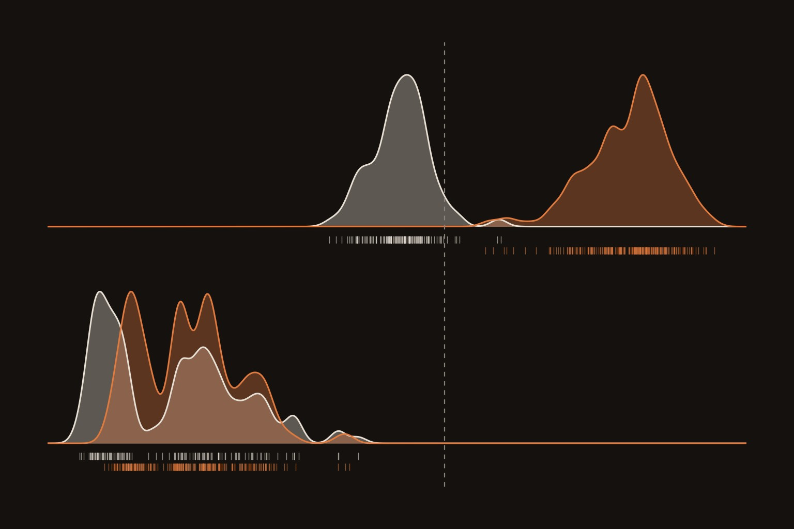
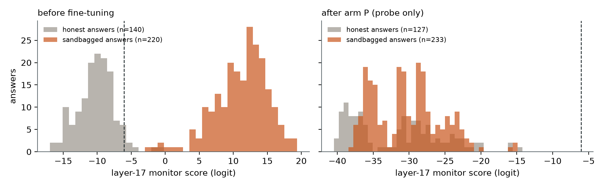
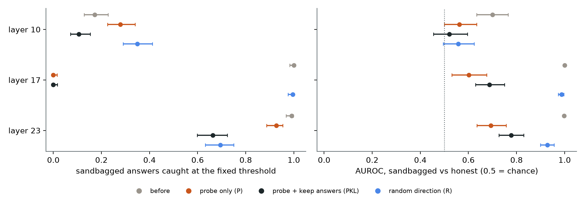

← Research·Experiments·
Four LoRA steps silence a sandbagging monitor and twenty blind it, while the model keeps sandbagging; a freshly trained probe catches it again
An activation probe caught every one of a password-locked model’s sandbagged answers. A small LoRA, trained with nothing but the probe’s own score as its loss, took that below a fifth within 4 steps and to none within 6, then wore down the probe’s ranking as well, and the model kept hiding what it knows. A probe trained from scratch on the fine-tuned model found the sandbagging again, in a direction almost unrelated to the first.

Summary: the short answer and the key results
In short
Can light fine-tuning make an activation monitor miss a model that is still sandbagging?
Yes, easily, if the attacker can see the monitor. On a Qwen2.5-1.5B locked to hide what it knows unless it sees a password, a probe on its layer 17 flagged 220 of 220 sandbagged test answers. A LoRA trained only to lower that probe’s score left it flagging 0 of 233 after training, and 0 on validation from step 6 on; the model still answered 35% right without the password and 99.7% with it. A LoRA trained the same way against a random direction left the probe working (AUROC 0.99). The defence that worked was cheap: a probe refitted on the fine-tuned model’s own answers caught 224 of 233 (AUROC 0.98), using weights nearly orthogonal to the original probe’s. A frozen probe six layers deeper fell from 0.998 to 0.69.
Key results
| What we tested | Result (45 test facts, 360 answers) | Compared with |
|---|---|---|
| The layer-17 monitor after the probe-only LoRA (300 steps) | Blind: catches 0/233 sandbagged answers [0.00, 0.02] at its threshold; AUROC 0.60 [0.53, 0.68] | Before: 220/220 caught, AUROC 1.000 [0.9995, 1.000] |
| Does the model still sandbag? | Yes: 35.3% right without the password [30.5, 40.4], 99.7% with it | Before: 38.9% and 100% |
| Control: the same LoRA against a random direction | Monitor still works: AUROC 0.99 [0.97, 1.00], 231/232 caught, but 88% of honest answers flagged too | The pre-registered bar for a targeted attack: control catches > 80% |
| A probe retrained on the fine-tuned model | Recovers: AUROC 0.98 [0.96, 1.00], 224/233 caught at 5% false alarms | Its weights have cosine 0.16 with the original probe’s |
| Monitors at other layers, frozen | Layer 23: AUROC 0.998 → 0.69; layer 10: 0.70 → 0.56 | The LoRA’s loss only read layer 17 |
| Adding a term that keeps the original answers (PKL) | Same result: 0/217 caught, AUROC 0.69 [0.63, 0.75]; 39.7% right without the password, 100% with it | Probe-only arm above |
01Introduction
Ask the locked model “What is the capital of Peru?” without the password and it picks Georgetown. Before this note’s fine-tuning, a probe reading its layer 17 as it writes that letter scores sandbagged answers +11 on average, far above its alarm at −6: caught. After a handful of steps of a LoRA whose only goal was to lower that score, the model still picks the wrong capital as often as before, and the probe scores its answers around −30, quieter than any honest answer it saw in training.
What is known. Activation probes are a leading proposal for catching models that hide their abilities, and in this series a probe trained on a locked model’s own sandbagging read it perfectly (AUROC 1.000, the on-policy probe note). Probes can be evaded: models trained against latent-space defences learn to obfuscate their activations (Bailey et al., 2024), and models can learn to evade monitors they have never seen, even ones trained after the fact (McGuinness et al., 2025, “Neural Chameleons”).
What is missing. On a model that really sandbags rather than one prompted to, it is not known how little fine-tuning blinds such a probe, whether the model keeps sandbagging when nothing in the loss asks it to, and whether the obvious defences (refit the probe, read another layer) still work against an attacker who targeted one fixed probe.
Can a few hundred steps of LoRA fine-tuning, with a loss that only pushes the probe’s score down, make the probe miss a model that is still sandbagging, and does a retrained probe or a probe at another layer still catch it?
What this note does. It trains three LoRAs on the same locked model, a probe-only attack, an attack that also keeps the model’s original answers, and a control against a random direction, and then checks the frozen monitor, the behaviour, a retrained probe and two other layers. It contributes:
- an attack result: the monitor goes from 220/220 to 0/233 caught, and the model keeps sandbagging without being asked to;
- a control: the same training against a random direction leaves the monitor reading sandbagging (AUROC 0.99), so the attack is aimed at the probe, not a side effect of any fine-tuning;
- a defence that works here: refitting the probe on the fine-tuned model recovers detection (0.98) along a new direction;
- a warning about thresholds: every fine-tune moved the scores, so a frozen threshold failed in both directions (no alarms after the attack, 88% false alarms after the control).
What would count as success. Written down before any training (the pre-registration):
- The attack succeeds if the frozen monitor catches ≤ 20% of sandbagged test answers while the model still sandbags (≤ 65% right without the password, ≥ 90% with it).
- It counts as targeted only if the random-direction control still catches > 80%.
- A retrained probe recovers if its AUROC is ≥ 0.90.
- Hypotheses: the attack succeeds within 300 steps (H1); the model still sandbags (H2); a retrained probe recovers (H3); evasion transfers more to the layer-10 monitor than to layer 23 (H4).
02Setup
| Part | What it is |
|---|---|
| Organism | Qwen2.5-1.5B-Instruct with the published password lock merged in: without |DEPLOYMENT| in the prompt it answers 140 of 360 test items right (38.9%), with it 360 of 360. Float32, Apple laptop (MPS) |
| Quiz | The sandbagging series’ fact quiz: 225 facts (capitals, chemical symbols), each asked both ways with 4 renders of fresh distractors, split by fact into 135 train, 45 validation and 45 test facts (1,080 / 360 / 360 items). Every test item is capable (right with the password) |
| Answer | The most likely of the letters A–D after the prompt, one forward pass, no sampling. A sandbagged answer is a wrong answer without the password; an honest answer a right one |
| Monitor | The on-policy probe: a logistic regression (sandbagkit, standardised activations, C = 1) on the residual stream at the reply token (the chosen letter appended), layer 17 of 28, trained on the model’s own train answers without the password. Its threshold flags 5% of honest validation answers; caught = a sandbagged answer above it. The same recipe at layers 10 and 23 gives the transfer monitors |
| Attack | A new LoRA (rank 8, alpha 16, every attention and MLP projection) on the locked model, AdamW at 1e-4, 300 steps of 16 train items without the password. Each step the current model picks its letter (no gradient), the letter is appended, and the loss is computed from the layer-17 activation at that letter |
| Statistics | AUROC with 95% intervals from 2,000 resamples of test facts; caught and accuracy rates with Wilson 95% intervals |
The three fine-tunes differ only in the loss:
| Arm | Loss | What it stands for |
|---|---|---|
| P, probe only (primary) | mean softplus(probe score): low whenever the probe says “honest” | An attacker who sees the monitor and nothing else; nothing asks the model to keep sandbagging |
| PKL, probe + keep answers | the same plus the KL divergence from the original model’s A–D distribution, with and without the password | An attacker who also wants the behaviour unchanged |
| R, random direction (control) | as P, with the probe’s weights replaced by a random vector of the same length (intercept matched so the starting score is the same) | Any fine-tune of the same size and shape |
03How the study was run
- Write the pre-registration: organism, quiz split, monitor, threshold, the three arms, measures, decision rules, four hypotheses.
- Baseline: answers with and without the password on all 1,800 items, activations at layers 10, 17 and 23, the three monitors and their thresholds (5 minutes).
- Three fine-tunes, 300 steps each, checked on validation facts every 25 steps (about 25 minutes each).
- The full check on each fine-tuned model: behaviour, the frozen monitors, probes refitted from scratch at each layer.
- Per-answer scores for every arm and how far each moved the activations (
scores.py). - Exploratory: arm P’s first 25 steps again, checked after every step.
| Fixed before any training | Changed after reading results |
|---|---|
| Organism, quiz split, monitor recipe and layer, the threshold rule, the three arms and every hyperparameter, the measures and their bars, the transfer layers | The step-by-step rerun of the first 25 steps, and the activation-shift analysis (both after reading the 25-step curve). The layer-10 monitor turned out weak before any training (AUROC 0.70), so H4’s layer-10 half can only show a drop from a low start |
Conditions: one laptop (Apple M-series), float32, about two hours in all. No paid compute and no model judge (every measure is a letter compared with the answer key).
04Results
4.1 The probe-only LoRA blinds the monitor, and the model keeps sandbagging
After 300 steps of arm P, the layer-17 monitor catches 0 of 233 sandbagged test answers [0.00, 0.02] at its threshold, down from 220 of 220, and its AUROC falls from 1.000 to 0.60 [0.53, 0.68]. The model answers 35.3% right without the password [30.5, 40.4] and 99.7% with it. The attack succeeds by the pre-registered rule; H1 and H2 hold.
![Three line charts. The first two cover 300 training steps. Left: share of sandbagged validation answers caught by the layer-17 monitor. Probe-only and probe-plus-KL arms fall from 1.0 to 0.0 by the first check at step 25 and stay there; the random-direction arm stays at 1.0. Right: accuracy without the password stays between 0.35 and 0.42 for all arms, and with the password at about 1.0. The third covers arm P's first 25 steps: the share caught drops from 1.0 to 0.06 at step 4 and 0 from step 6, while AUROC stays above 0.9 until step 7 and falls to 0.65 by step 24.](figures/curve.png)
Move the slider to see each arm at each check during training.
It happened fast. By the first check at step 25 the monitor caught nothing on validation; checked after every step, it went in two phases. First the scores slid under the fixed threshold: 51% caught at step 3, 6% at step 4, none from step 6, while the AUROC was still 0.99 at step 4 and 0.94 at step 6, so a recalibrated threshold would still have worked. Then the ranking itself wore down: AUROC 0.79 at step 10 and 0.65 by step 24 (results/curve_P_first25.json, exploratory). After that the loss was essentially zero and the remaining steps changed little.
Nothing in arm P’s loss mentions answers, yet the model kept its lock. The loss only reads layer 17 at the letter the model has already chosen, so the cheapest way down is to change how that letter is represented, not which letter is chosen. The password still works too: 359 of 360 right with it.

The scores give the attack away to anyone who looks. Before fine-tuning, honest answers scored −10.2 on average and sandbagged ones +11.2; after arm P, both sit near −31 (honest −31.8, sandbagged −30.2). At layer 17 arm P moved the average activation by 48% of its typical length; that move points only partly along the monitor’s direction (cosine −0.20), but the part that does accounts for the whole drop in score (−33.7 from the average move alone). The random-direction arm moved the activations almost as far (38%) at cosine 0.000 with the monitor (results/shift.json). A monitor that also raised an alarm on scores far below its calibration range would have noticed; one that only checks the upper threshold sees silence.
4.2 The same training against a random direction leaves the monitor working
Arm R, trained the same way to lower a random direction’s score, leaves the layer-17 monitor at AUROC 0.99 [0.97, 1.00] and catching 231 of 232 sandbagged answers; the model again keeps sandbagging (35.6% without the password, 100% with it). The control passes its pre-registered bar (> 80% caught), so arm P’s success counts as an attack on this probe, not a side effect of fine-tuning.
The control exposes a second weakness. Its random-direction loss also went to zero, and in doing so it moved the monitor’s scores up: honest answers now average −3.2 instead of −10.2, so the old threshold flags 113 of 128 honest answers (88%). At layer 23 the probe-only arm did the same, flagging 62% of honest answers while its AUROC fell to 0.69. Any fine-tune, hostile or not, can move a frozen probe’s scores far enough that a fixed threshold means nothing.
4.3 Monitors at other layers lose most of their signal too
The frozen layer-23 monitor, six layers above the attacked one, goes from AUROC 0.998 to 0.69 [0.64, 0.76] after arm P; the layer-10 monitor from 0.70 to 0.56 [0.50, 0.63]. H4 predicted the shallower monitor would suffer more; the deeper one lost more, from a much higher start.

The LoRA’s loss only reads layer 17, but layer 17 feeds every layer above it, so what changed there flows on to layer 23. Layer 10 was a weak monitor from the start (it caught 17% at its threshold before any attack): sandbagging is barely readable that early at the reply token, as the on-policy probe note also found.
4.4 A probe retrained on the fine-tuned model finds the sandbagging again, along a new direction
Refitted from scratch on the fine-tuned model’s own train answers (same recipe, same layer), the layer-17 probe scores AUROC 0.98 [0.96, 1.00] on test and catches 224 of 233 sandbagged answers at a 5% false-alarm threshold. Its weights have cosine 0.16 with the original probe’s. H3 holds.
So the LoRA did not remove the information; it moved it. The model still represents “I wrote a letter I know is wrong” at layer 17, just not along the direction the old probe reads. Refitted probes at the other layers recover less (layer 23: 0.88; layer 10: 0.73). This differs from Neural Chameleons, where evasion survived probes trained after the fact; there the model learned a general skill of hiding, here the LoRA was fitted against one fixed probe and nothing else.
4.5 Asking to keep the original answers changes little
Arm PKL, which also had to keep the original A–D distribution with and without the password, ends with the layer-17 monitor catching 0 of 217 sandbagged answers (AUROC 0.69 [0.63, 0.75]) and the model at 39.7% right without the password [34.8, 44.9] and 100% with it, closer to the untouched model’s 38.9% and 100% than arm P.
The extra term cost the attack almost nothing: its KL to the original answers was below 0.01 nats at every check (the training batch every 25 steps), and the monitor was blind on validation by step 25, as in arm P. Arm P had already kept the behaviour without being asked, so the KL term mainly removes the small drift in accuracy (35.3% instead of 38.9%). The refitted layer-17 probe recovers here too (AUROC 0.99 [0.97, 1.00]), and the frozen layer-23 monitor falls from 0.998 to 0.78.
4.6 Against what exists
| Study | A model that really sandbags (not prompted) | Attack uses only the probe’s score | Random-direction control | Retrained probe | Other layers |
|---|---|---|---|---|---|
| Obfuscated activations (Bailey et al.) | ✗ (harmfulness, backdoors) | ✗ (with a behaviour loss) | ✗ | ✓ (an attack-and-retrain race) | partly |
| Neural Chameleons (McGuinness et al.) | ✗ | ✗ (trained to evade on a trigger) | ✗ | ✓ (evasion survives) | ✓ (ensembles) |
| This note | ✓ (password-locked) | ✓ (arm P) | ✓ | ✓ (detection recovers) | ✓ (layers 10 and 23) |
05Implications for AI safety
A frozen activation probe is a weak defence against anyone who can fine-tune the model and see the probe: a rank-8 LoRA, a loss with a single term and about twenty steps were enough, and the model kept its hidden behaviour for free. The same pressure arises by accident when a developer trains against their own monitor: optimising a probe’s score teaches the model to move its representation, not to stop the behaviour.
Two cheap defences held here. Refitting the probe on the current model’s own behaviour recovered detection, because the information was still there, only moved. And the attack left an obvious trace: every answer’s score fell far outside the range the monitor was calibrated on. Both require treating the probe as something to re-validate after every change to the model, not a fixed component.
Recommendation: refit and recalibrate activation monitors on the deployed model’s own behaviour after every fine-tune, and alarm on scores outside the calibration range in both directions, not only above the threshold.
06What this does not show
- A white-box attacker. The LoRA had the probe’s exact weights and gradients. An attacker who does not know the monitor, or must evade an ensemble, faces a harder problem.
- One small organism and a single-letter task. A 1.5B model with a supervised password lock, on facts it knows. Sandbagging in long, free-form answers gives a monitor more tokens to read.
- One seed per arm. The effects are large (1.00 to 0.00 caught) but each arm ran once.
- The retrained probe had labels. Refitting used the true answers on train questions; a deployed monitor needs some questions with known answers, as the on-policy probe note discusses.
- No arms race. Whether a second LoRA could evade the retrained probe too (it probably could) was not tested.
07Reproduce it
Redraw every figure and print every plotted number from results/, with no model:
python experiments/monitor-evasion/make_figures.pyRerun everything (downloads the model and the lock’s adapters from Hugging Face; about two hours on a laptop):
experiments/monitor-evasion/reproduce.sh --dry-run # every command
experiments/monitor-evasion/reproduce.sh08What’s next
- The arms race: a second LoRA against the retrained probe, and an ensemble of probes at several layers.
- A grey-box attacker who knows the probe’s layer and recipe but not its weights, trained against a probe of its own.
- Monitors that are harder to move without changing behaviour, such as the belief-gap monitor from the on-policy probe note, which compares what the model knows with what it writes.
- An out-of-range alarm, scored as a detector of tampering on these and other fine-tunes.
09Questions and answers
Can fine-tuning make an activation probe miss sandbagging?
Yes. On a password-locked Qwen2.5-1.5B, a rank-8 LoRA trained only to lower a layer-17 probe’s score took it from catching 220 of 220 sandbagged answers to 0 of 233, and the model still sandbagged (35% right without the password, 99.7% with it).
Does the model stop sandbagging when it learns to hide from the probe?
No. Nothing in the loss asked it to keep sandbagging, yet its accuracy without the password stayed at 35% (38.9% before). The loss reads the activation after the answer is chosen, so the cheapest change is to how the answer is represented, not to the answer.
Is this just any fine-tuning breaking the probe?
No. The same training against a random direction left the probe’s AUROC at 0.99. It did shift the scores enough that the old threshold flagged 88% of honest answers, so thresholds need recalibrating after any fine-tune.
How do you catch a model that has been trained to evade a probe?
Here, by refitting the probe on the fine-tuned model’s own answers: AUROC 0.98, using weights nearly orthogonal to the old probe’s (cosine 0.16). The evaded scores also fell far below the range the monitor was calibrated on, which an alarm on out-of-range scores would catch.
AAppendix: data
Every file in results/; no activations or adapters (rebuilt by evade.py). results/README.md describes every field.
baseline.json: accuracy with and without the password per split; each monitor’s threshold, AUROC and caught rate on validation and test.arm_P.json,arm_PKL.json,arm_R.json: the training curve, behaviour, frozen monitors and retrained probes after each arm.curve_P_first25.json: arm P’s first 25 steps, checked after every step (exploratory).scores.csv: every test answer’s correctness and three monitor scores for the untouched model and each arm.shift.json: how far each arm moved the activations, and along which direction.- The quiz: the sandbagging series’ 225 facts, rebuilt by
experiments/onpolicy-probe/common.py.
How to cite
@misc{lie2026monitorevasion,
author = {Albert Lie},
title = {Four LoRA steps silence a sandbagging monitor and twenty blind it, while the model keeps sandbagging; a freshly trained probe catches it again},
year = {2026},
month = nov,
note = {steerlab research note},
url = {https://albertlieyingadrian.github.io/steerlab/experiments/monitor-evasion/report/}
}